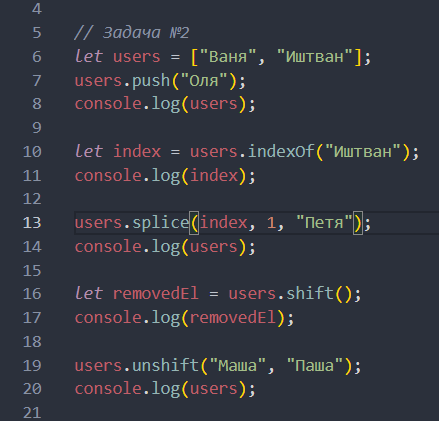
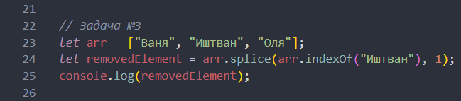
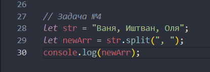

JS homework
Функції в JAVASCRIPT
- Коля буде переможцем, адже setTimeout() дозволяє запланувати запуск функції через певний час, тобто поставить цю задачу в чергу, і далі піде собі спокійно виконувати код до кінця. А потім вже коли на стеку викликів не буде коду, то викличеться ця функція, що чекала в черзі
- Тут все ОК, function declaration можна викликати і до об'яви функції
- Wrong! Функціональний вираз (function expression) не можна викликати до місця його створення
- Створюємо змінну, якій потім у тілі if присваюємо функціональний вираз
Масиви в JAVASCRIPT
- Отримаємо 4, адже присвоєння масивів іде за посиланням
- 
- 
- 
- arrTwo не був заданий, а тому буде помилка. Якщо замість arrTwo прописати заданий масив, то тоді початковим значенням буде перший елемент масиву - 9, так як інше початкове значення не було задане
DOM
Привет!
- Корчі
- Йончі
Із-за querySelectorAll буде помилка, якщо замість querySelectorAll буде querySelector, то li вставиться у кінець першого ul перед закриваючим тегом(після всіх лішек))
Scroll
Дивитись у JS